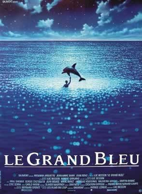
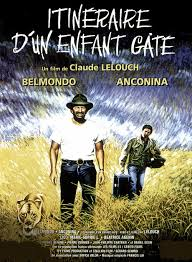

Didier DESCHAMPS
Premier ministre
- "Je sais aussi que les soirées des journalistes sont très animées. (…) Vous pouvez avoir des dossiers sur les joueurs, mais j’en ai aussi sur vous."
- "Dans le football, comme dans la vie, on peut pas avoir que des architectes, on doit aussi avoir des maçons."
Mes films préférés
|  |
Le Grand BleuDepuis l'enfance, une rivalité oppose deux fans de plongée, le Français Jacques Mayol et l'Italien Enzo Molinari. À l'âge adulte, ils continuent à s'affronter, descendant toujours plus profond, en apnée. Un jour, Jacques rencontre Johanna, qui travaille avec un professeur venu étudier les réactions d'un corps immergé sous la glace, et c'est le coup de foudre. |
|  |
Itinéraire d'un enfant gâtéAprès avoir brillamment réussi dans la vie, un homme de cinquante ans se retire secrètement et part à l'aventure. |
About Didier
Didier Deschamps, né le 15 octobre 1968 à Bayonne, est un footballeur international français devenu entraîneur. Il est depuis 2012, le sélectionneur de l'équipe de France.